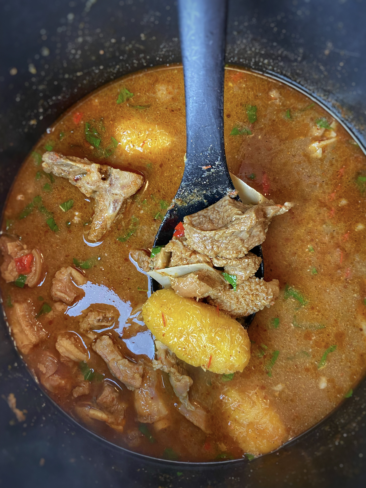

Goat Meat pepper soup

This is a picture of the Greatest pepper soup you wish you Tasted
On one glorious sunday we visited my aunt. Believe me when I tell
you that I could smell the aroma of the soup from the gate and if
it was tensioning me like that imagine what it was doing to the neighbours.
She made pepper soup with all kinds of assorted meats and offals , garnished it
with Uziza and blessed it with God’s personal orishirishi. Till today I will never
forget the flavour of that soup and I have spent years trying to replicate it.This comes close.
Here is a list of the ingredients
- 1 Lb goat meat and shaki
- 1 pinky size garlic
- 3 clove garlic
- 1 small onion
- 6 scotch bonnets
- 5 cups water
- chopped basil hand full
How the Special Goat Meat Pepper Soup is made
- Prepare meat marinade by finely blending scotch bonnet, onion, garlic and ginger
- Cut goat meat into tiny pieces and place in pot. Season with marinade , salt, seasoning cube, Cameroon pepper and paprika. Let it cook for 30-40 minutes on medium heat.
- While meat is cooking boil unripe plantain for 10 minutes, drain water and set aside
- Once meat is cooked, add 4 cups of water to the pot, boiled plantain and season with nutmeg, pepper soup spice, crayfish and a little more salt. Let it cook for 15 more minutes
- Add chopped basil and 1 chopped red pepper to garnish . Let it simmer for 1 minute and serve hot.